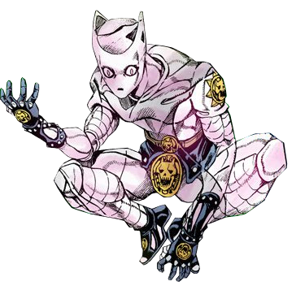

ROHAN

KAWAJIRI HAYATO 川尻 早人
Lives with Mama and Papa near the station.
One night Papa came home different.
He signs his name with another hand now.
He keeps his fingernails in jars.
I hid cameras all over the house.
I saw what he did. I know he isn't Papa.
I can't tell anyone. If I do, it goes off.
His real name is Kira Yoshi—
p. 11DRAG THE CORNER TO TURN THE PAGE